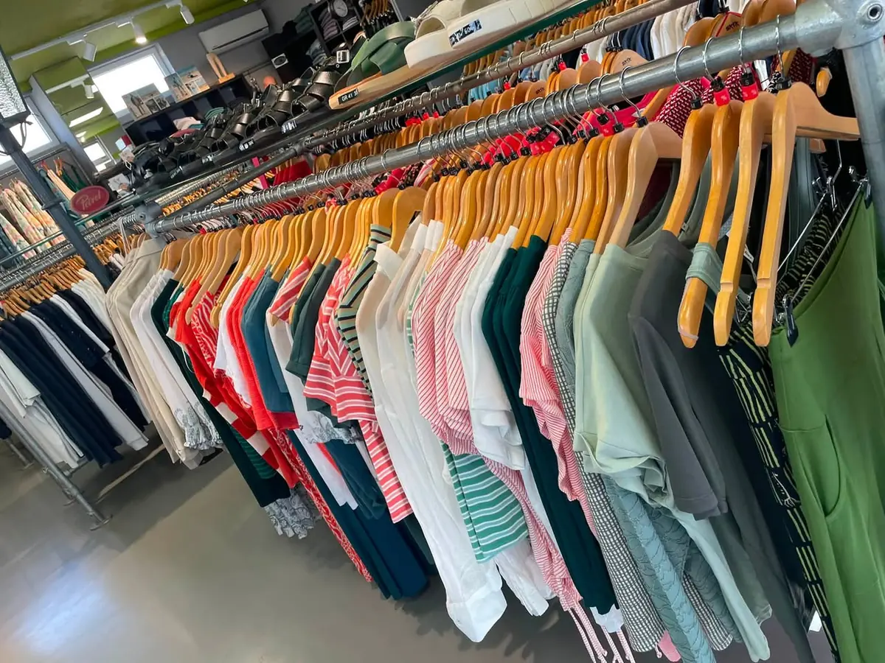

CORNER Mode.Schuh.Treff und Piercing Avalon in Scheibbs

Der Mode-Treff
von Scheibbs.
Handverlesene Marken, ehrliche Beratung und Sachen zum Anprobieren statt Zurückschicken.
Zur Mode →
Gestochen mit
25+ Jahren Erfahrung.
Alle Piercing-Varianten, in Ruhe beraten — ausschließlich nach telefonischer Voranmeldung.
Zum Piercing →Zwei Betriebe, eine Adresse
Ein Haus, zwei eigene Welten.
In der Hauptstraße 40 mitten in Scheibbs teilen sich zwei Betriebe ein Dach. Vorne der CORNER Mode.Schuh.Treff von Monika Zulehner: Mode, die jede Saison persönlich ausgesucht wird, für Damen, Herren und junge Leute. Und im selben Haus Piercing Avalon von Daniel Graf, der seit 1999 piercet. Zwei Handwerke, zwei Zielgruppen — und der praktische Nebeneffekt, dass man beides bei einem Besuch erledigen kann.
Mode-Welt
Mode, die man anprobieren kann.
Damenmode mit Charakter, unkomplizierte Herren-Looks und frische Styles für junge Leute — von Blutsgeschwister über ANGELS bis Petrol Industries und ragwear. Aktuelle Angebote und neue Ware posten wir laufend auf Facebook.
Piercing-Welt
Piercing mit ruhiger Hand.
Daniel Graf piercet seit 1999: Ohr, Nase, Lippe, Bauchnabel bis hin zu Intimpiercings. Beratung, sauberes Arbeiten und klare Pflegehinweise gehören dazu. Termine ausschließlich nach telefonischer Voranmeldung.
Kontakt & Anfahrt
Ein Haus. Zwei Nummern.
CORNER Mode.Schuh.Treff
Inhaberin: Monika Zulehner
Hauptstraße 40, 3270 Scheibbs, Österreich
+43 676 911 3654 · office@corner-modetreff.at
| Montag – Freitag | 9:30 – 18:00 |
| Samstag | 9:00 – 12:30 |
| Sonn- & Feiertag | geschlossen |
Öffnungszeiten können sich saisonal ändern — aktuelle Zeiten immer auf unserer Facebookseite.
Piercing Avalon
Daniel Graf · im CORNER
Termine ausschließlich nach telefonischer Voranmeldung